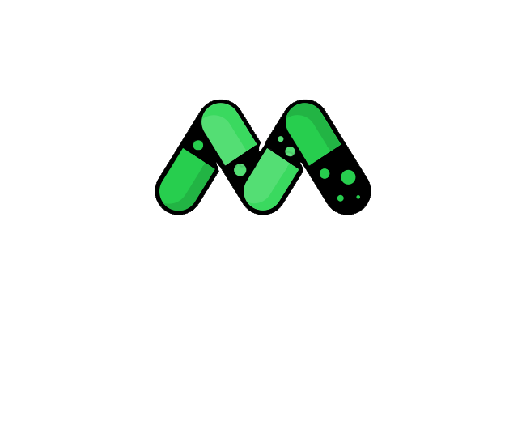

<nav class="navbar fixed-top navbar-expand-lg navbar-light" [class.scrolledbg]="isScrolled">
    <a class="navbar-brand d-flex" [class.scrolledcolor]="isScrolled" routerLink="" >
        
       
      </a>
    <button class="navbar-toggler" type="button" data-toggle="collapse" data-target="#navbarNavDropdown" aria-controls="navbarNavDropdown" aria-expanded="false" aria-label="Toggle navigation">
      <span class="navbar-toggler-icon"></span>
    </button>
    <div class="collapse navbar-collapse " id="navbarNavDropdown">
      <ul class="navbar-nav ">
        <li class="nav-item " routerLinkActive="active">
          <a class="nav-link-design" [class.scrolledcolor]="isScrolled"  routerLink="/aboutus" >About us</a>
        </li>
        
        <li class="nav-item" routerLinkActive="active">
          <a class="nav-link-design" [class.scrolledcolor]="isScrolled" routerLink="/features">Features</a>
        </li>
        <li class="nav-item">
            <a class="nav-link-design" [class.scrolledcolor]="isScrolled"  routerLink="/chat">chat</a>
          </li>
     
      </ul>


      <ul *ngIf="!loggedIn"  class="navbar-nav ml-auto">

        <li class="nav-item dropdown" routerLinkActive="active">
          <a  class="nav-link-design dropdown-toggle" [class.scrolledcolor]="isScrolled"  role="button" data-toggle="dropdown" aria-expanded="false">
            <fa-icon [icon]="faUser" class="mr-2 "></fa-icon> Sign In
          </a>
          <div  class="dropdown-menu">
            <a class="dropdown-item text-capitalize" routerLink="/signin">Sign In</a>
            <a class="dropdown-item text-capitalize mt-2"  routerLink="/register">Register</a>
          
          </div>
        </li>
        
        
       
      </ul>


      <ul *ngIf="loggedIn"  class="navbar-nav ml-auto">

        <li class="nav-item dropdown" routerLinkActive="active">
          <a  class="nav-link-design dropdown-toggle"  [class.scrolledcolor]="isScrolled" role="button" data-toggle="dropdown" aria-expanded="false">
            <fa-icon [icon]="faUser" class="mr-2 user-icon "></fa-icon> {{username}}
          </a>
          <div  class="dropdown-menu">
            <a class="dropdown-item text-capitalize" style="cursor: pointer;" routerLink="profile" >Profile</a>
            <a class="dropdown-item text-capitalize mt-2" (click)="logOut()"  style="cursor: pointer;">Log Out</a>
          
          </div>
        </li>
        
        
       
      </ul>


      <ul class="navbar-nav">
       
        <li class="nav-item">
            <button type="button" class="btn btn-primary btn-sm">Download</button>
        </li>
       
      </ul>


    </div>
  </nav>